Santiago de La Osa de Sousa
contato

+55 (61) 98241-4609

Santiagodelaosa@gmail.com
https://www.linkedin.com/in/santiosa/
https://github.com/SantiOsa
formação acadêmica
2019-2022
Administração
Uniprojeção
2023-2025
Analise e desenvolvimento de sistemas
Uniprojeção
Experiência profissional
Conhecimentos
nível acadêmico
CSS - HTML